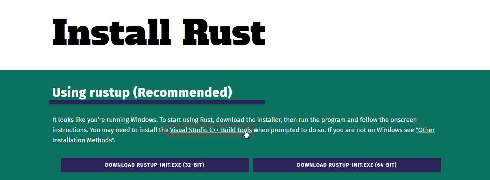
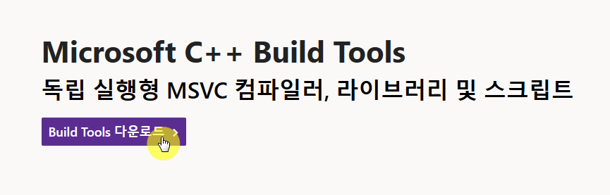
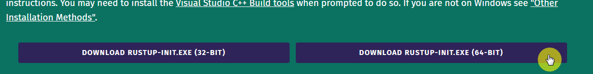
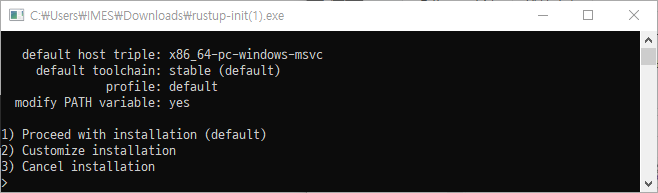
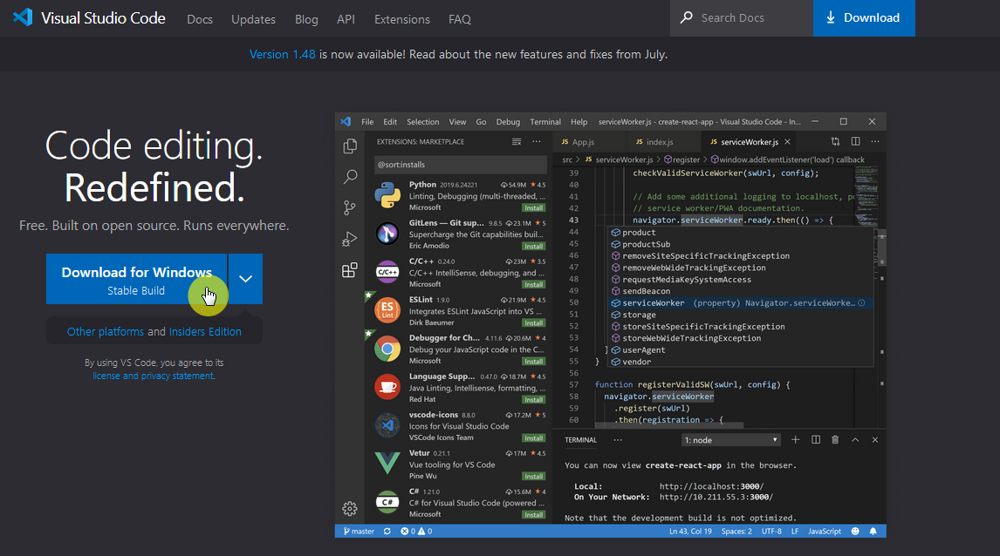
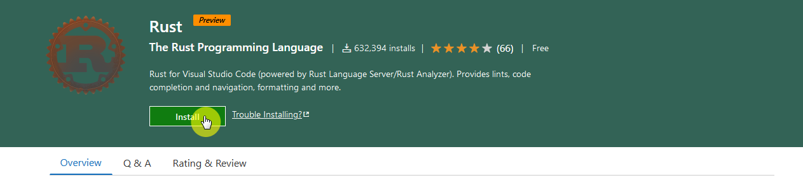
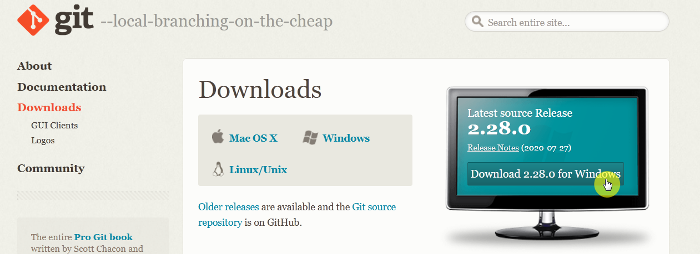
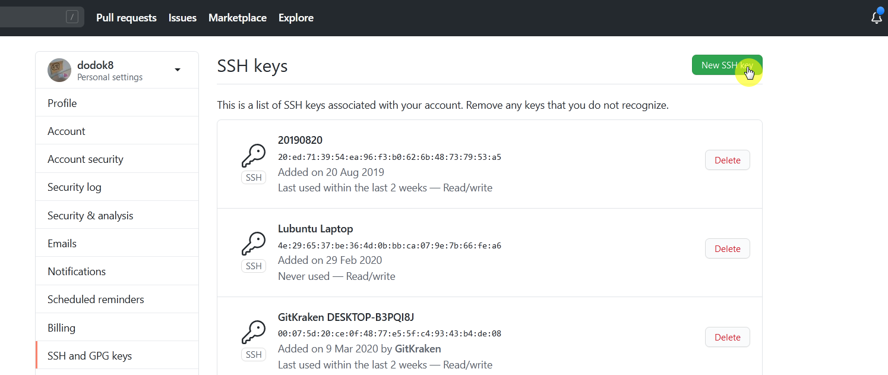
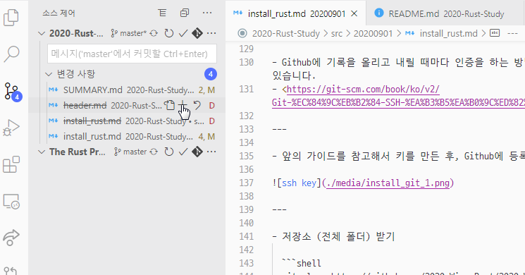
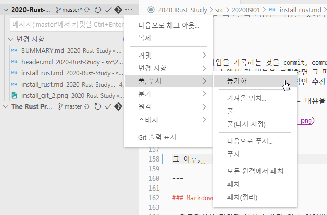

marp: true
러스트 설치하기
2020년 9월 1일 김현서
Rust
Rust를 설치하는 방법은 여러 방법이 있지만, rustup이라는 도구를 통해서 rust와 그와 관련된 도구를 설치할 수 있습니다. 설치는 윈도우 기준입니다.
1. Rust-lang install 접속
- https://www.rust-lang.org/tools/install 접속
- Visual Studio C++ Build Tools 링크 클릭 
2. Visual Studio C++ Build Tools 설치
- 링크 클릭 :
vs_BuildTools.exe다운로드 후 실행 - 이후 Visual Studio Build Tools 2019를 기본 옵션으로 설치 
3. RUSTUP-INIT.EXE 실행
- https://www.rust-lang.org/tools/install로 들어와서 64비트 다운로드 후 실행 
- 이후 default 옵션으로 설치하기 위해 1을 입력 후 실행 
5. 설치 확인
-
설치 확인을 위해서 터미널(CMD, Bash, PowerShell이든 뭐든)에서 다음 명령어를 입력합니다.
rustc --version다음과 같은 형식으로 출력되면 성공한 것입니다.
rustc x.y.z. (abcabcabcc yyyy-mm-dd)
텍스트 에디터 Visual Studio Code 설치 및 세팅
- Rust를 메모장에서 공부할 수도 있고, 이 책을 따라가는 데 큰 불편함이 없을 수도 있겠지만, 그래도 편한 도구를 사용해 봅시다. Visual Studio Code는 여러 막강한 기능을 제공하는 에디터이지만 그건 스스로 찾아 보시고 여기서는 rust와 관련된 기능만 사용할 것입니다.
1. Visual Studio Code 설치
-
https://code.visualstudio.com/ 접속, 파일 설치 및 실행

2. Rust 확장 기능 설치
- https://marketplace.visualstudio.com/items?itemName=rust-lang.rust에 들어가 install 누르기
- 그러면 VSC에서도 그 확장 기능 창이 뜰 텐데 설치하면 됩니다.

3. 설정 지정
- 대부분의 설정은 GUI로 설정할 수 있는데, 몇몇 설정은 직접 파일을 수정하긴 해야합니다.
- 그 파일을 접속하긴 위해선 윈도우 탐색기에서
%appdata%/Code/User에 들어가면settings.json에 들어가서 편집해야합니다.
-
그래서 파일을 미리 작성해서 여기 적어놓았습니다.
{ "[rust]": { "editor.defaultFormatter": "rust-lang.rust", "editor.tabSize": 4 }, "editor.insertSpaces": true, "rust-analyzer.checkOnSave.overrideCommand": null, "rust-analyzer.debug.engine": "vadimcn.vscode-lldb", "rust-analyzer.rustfmt.overrideCommand": null, "rust.build_lib": false, "editor.formatOnPaste": true, "editor.formatOnSave": true, "editor.formatOnType": true, }
Git
- 가장 폭 넓게 쓰이는 버전관리 시스템입니다. 저희는 Github에서 제공하는 기능과 연계하여 배포용으로만 사용할 예정입니다.
Git 설치
- https://git-scm.com/downloads 들어가서 설치해주세요.

- Github에 가입해주세요.
기본적인 Git 사용법
1.SSH 키 등록
- Github에 기록을 올리고 내릴 때마다 인증을 하는 방법도 있지만 한 번에 진행하는 방법이 있습니다.
- https://git-scm.com/book/ko/v2/Git-%EC%84%9C%EB%B2%84-SSH-%EA%B3%B5%EA%B0%9C%ED%82%A4-%EB%A7%8C%EB%93%A4%EA%B8%B0
- 앞의 가이드를 참고해서 키를 만든 후, Github에 등록을 해야합니다.

-
저장소 (전체 폴더) 받기
git clone https://github.com/2020-Wing-Rust/2020-Wing-Rust.github.io.git -
저희는 정말 최소한의 기능만 사용할 것이기 때문에, VS Code를 통해서 Git을 관리하도록 하겠습니다.
- Git에서 작업을 기록하는 것을 commit, commit할 파일 목록에 올리는 것을 stage라고 합니다. vs code에서 저 버튼을 클릭하면 그 파일을 스테이징 할 수 있습니다.
- 스테이징 시점이 기준이므로, 추가적인 수정 사항도 포함하고 싶다면 다시 stage를 눌러주세요.
- 이후 위의 입력창에 적당히 커밋하는 내용을 요약한 후 Ctrl + Enter를 누르면 됩니다.

- 그 이후, 동기화를 눌러주세요. 이 작업은 최신버전으로 업로드(푸쉬)와 다운로드(풀)을 동시에 진행합니다.

Markdown
- 마크다운은 편하게 문서를 쓰기 위한 언어입니다. 현재 사용 중인 플랫폼도 마크다운 파일을 받아들여서 HTML 형식의 전자책으로 만드는 과정을 통해 배포되고 있습니다. 여기서는 직접적으로 문법을 안 다루겠습니다. 굳이 마크다운으로 자료를 만들 필요는 없거든요.
- https://heropy.blog/2017/09/30/markdown/